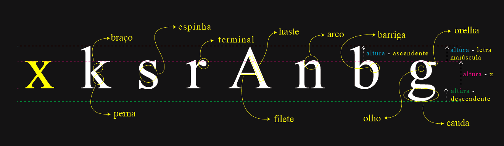

Sumário
Origem
Os monges copistas
A escrita como conhecemos hoje teve seu começo cerca de 5000 anos atrás. Os povos egípcios criaram a escrita hieroglífica, com diversos símbolos representando animais, objetos e conceitos. Os escribas eram os responsáveis por dominar essa escrita.
Ao longo de anos de evoluções e escritas de diversos povos, no século XV se destaca os trabalhos dos monges copistas (ou copistas amanoenses) da Igreja Católica. Esses monges eram encarregados de fazer a reescrita de livros, escrevendo letra por letra, página por página um livro inteiro. Obviamente esse trabalho era demorado e nada prático.
De mãos cansadas
Foi então que, na metade do século XV, Johames Gutenber, considerado hoje pai da imprensa, criou um mecanismo de impressão que era capaz de colocar de forma mais precisa, prática e rápida que a escrita à mao: a prensa mecânica de tipos móveis.
Tipos móveis
Os tipos móveis eram as formas das letras, dos glifos, melhor dizendo, que tinham relevo. Móveis porque eram movidos para as posições das palavras dos textos e livros. Assim, quando eram molhados com tinta, eram posicionados na prensa e o papel era colocado e prensado contra os tipos, fazendo assim a impressão. Importante notar que os tipos móveis eram todos ao contrário, pois quando colocados no papel, ficariam na posição correta de leitura.
Aperfeiçoamento da tipografia
Porém, da criação da prensa mecânica nasceu a necessidade de melhorar os tipos para que fossem mais legíveis e agradáveis de leitura. Dessa forma, nasce a tipografia: o estudo da estilização de tipos, glifos. Vem de týpos = impressão; graphia: escrita.
Anatomia do tipo
A importância do "x" minúsculo
O processo mais importante de como será feita um tipo, uma fonte, sem dúvidas é a altura do "x" minúsculo. Ele determina a altura de todas as outras minúsculas de uma fonte. A partir daí que as maiúsculas, as outras alturas, os caules e toda a fonte são construídas, tendo assim uma harmonia entre as letras e que estejam todas uniformes e, o mais importante, agradável aos olhos, facilitando a leitura.
Anatomia "métrica" (alturas)
Altura das Maiúsculas
Determina, a partir da altura-x, a altura das letras miúsculas da fonte.
Altura ascendente
Altura de letras como b, k e d. É a altura de uma letra minúscula que tem um prolongamento acima da altura-x. Esse prolongamento, geralmente, tem a mesma altura das maiúsculas, porem não é uma regra.
Altura descendente
Altura contidas em letras como p, q e y. Representa o contrário da altura ascendente, sendo o prolongamento que está abaixo da altura-x. Em letras como g e Q, esses prolongamentos podem ser chamados de "cauda" do glifo.
Anatomia geométrica
Serifa
São extensões, suaves ou não, do glifo de alguma fonte. Sua função é criar uma harmonia na leitura. Para tal, as serifas criam um alinhamento imaginário pelas letras, enganando o cèrebro e facilitando a leitura, pois o cérebro humano tenta interpretar as palavras como um todo, não cada letra individualmente.
Outros elementos geométricos
Família tipográfica
Categorias tipográficas
Serif ou sans-serif
Determina fontes que têm ou não serifas. Sendo as serifadas "serif" e as não serifadas "sans-serif". Essas suas nomenclaturas são as que serão utilizadas no style do site.

Monoespaçadas (monospaced)
Fontes com o mesmo espaçamento entre letras, mesmo tamanho de altura e largura. São fontes utilizadas mais para programação, pois deixam o texto mais uniforme e fácil de ler para variáveis, condições e outros tipos de dados da programação.
Handwriting (script)
Fontes com tipo de glifos de forma como escrito à mão. Ideais para dar um sentimento mais cuidadoso, dependendo da fonte script.
Display (decorativas)
Como há no título, são fontes decorativas. Usadas para decorar e estilizar. São as mais variadas e diferentes nesse quesito.
Observação
Não necessariamente cada família dessa é independente. Irão existir, por exemplo, fontes monoespaçadas decorativas e serifadas, ou não serifadas e script.
Peso tipográfico
O peso da fonte (ou peso tipográfico) caracteriza-se pela espessura da fonte. Essa espessura se dá em número que vão de 100 (ultra-fino, thin) à 900 (super negrito, black, heavy). Abaixo uma lista de todos eles.
- 100 → Ultra fino (Thin)
- 200 → Muito leve (Extra Light)
- 300 → Leve (Light)
- 400 → Normal (Normal ou Regular)
- 500 → Médio (Medium)
- 600 → Semi-negrito (Semi Bold)
- 700 → Negrito (Bold)
- 800 → Extra negrito (Extra Bold)
- 900 → Super negrito (Black, Heavy)